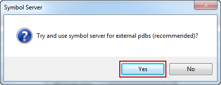
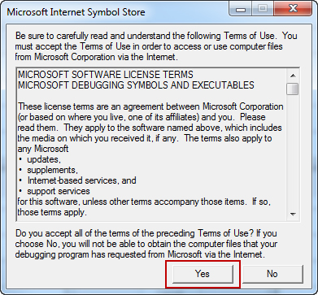
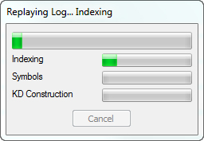

Обзор
В этой статье объясняется, как настроить инструмент MemReplay. В зависимости от вашей лицензии CRYENGINE вам, возможно, придется добавить некоторые файлы в папку MemReplay.
Главы:
Требования
Для MemReplay 1.9 и более ранних версий требуется Visual Studio 2010 для разрешения символов из файлов PDB. Это требование не существует для MemReplay 1.10 и более поздних версий.
Если вы планируете скомпилировать CRYENGINE с версией, отличной от Visual Studio 2012, вам придется заменить bin/<platform>/dbghelp.dll
dbghelp.dll можно найти в папке установки текущей версии Visual Studio. Например, если используется Visual Studio 2012, файлы можно найти здесь:
C:\Program Files (x86)\Microsoft Visual Studio 11.0\Common7\IDE\Remote Debugger\x64Xbox Один
В дополнение к файлу zmrl для MemReplay требуется файл дампа ядра на этой платформе. Пожалуйста, обратитесь к Начало работы с MemReplay.
PS4
MemReplay попросит вас найти следующий файл при первом открытии файла zmrl. Он расположен здесь:
$SCE_ROOT_DIR/ORBIS SDKs/<version>/host_tools/bin/orbis-bin.exeЗагрузка и анализ файла ZMRL
А ЗМРЛ (яосвобождённый мэмрэлектронная игра лog) представляет собой сжатый поток, содержащий информацию о действиях с памятью в CRYENGINE. Пожалуйста, прочитайте Начало работы с MemReplay чтобы узнать, как создать файл zmrl.
Запустите MemReplay.exe из Win32 или x64 и откройте файл zmrl. Вас попросят помочь MemReplay найти некоторые файлы, например файлы pdb.


MemReplay начнет индексировать и разрешать символы из предоставленных данных. При первом запуске это займет некоторое время, но при перезагрузке будет быстрее, поскольку кешируется большой объем информации.

Если MemReplay не загружает выбранный вами файл PDB, то весьма вероятно, что файл PDB не соответствует информации внутри файла ZMRL.
Убедитесь, что вы выбрали файлы PDB, которые использовались при создании файла ZMRL. Если они не относятся к той же сборке, что и исполняемый файл, создавший журнал памяти, символы не будут разрешены правильно.